F.52 Homogeneous Barycentric Coordinates — Folios¶
Archival manuscript scans and diplomatic transcriptions from seelig’s notebooks for F.52 (Homogeneous Barycentric Coordinates) (SeeligNotebooks).
Folio 0331 (Page 1 of 15): Homogeneous Barycentric Coordinates — Area & Mass Interpretation (bari-centers-001)¶

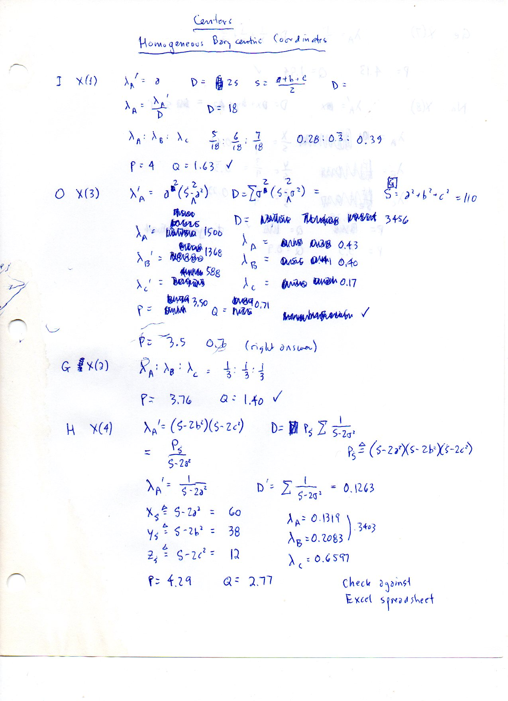
Folio 0331 (original scan 0331.jpg) from resources/seelig/52_homogeneous-barycentric-coordinates.¶
Diplomatic Mathematical & Geometric Transcription
Diplomatic Transcription — Folio 0331 (0331.jpg, Sheet 1 of 15):
Defines \(\lambda_A = [PBC]/[ABC], \lambda_B = [PCA]/[ABC], \lambda_C = [PAB]/[ABC]\) with \(\lambda_A + \lambda_B + \lambda_C = 1\).
Editorial & Symbolic Notes
Archival scan 0331.jpg from Fred W. Seelig’s notebook dossier on F.52 Homogeneous Barycentric Coordinates (Page 1 of 15). Companion OpenDocument worksheet(s): Barycentric, Barycentric (2), 9-Point Circle, 5-6-7 A,B,C. Classical Euclidean foundations: IV.4, IV.5, VI.1. Kimberling Encyclopedia of Triangle Centers loci: X(1) — Incenter, X(2) — Centroid, X(3) — Circumcenter, X(4) — Orthocenter, X(5) — Nine-Point Center, X(6) — Symmedian (Lemoine) Point, X(7) — Gergonne Point, X(8) — Nagel Point.
Folio 0332 (Page 2 of 15): Master Barycentric Catalog: X(1), X(2), X(3), X(4) (bari-centers-002)¶

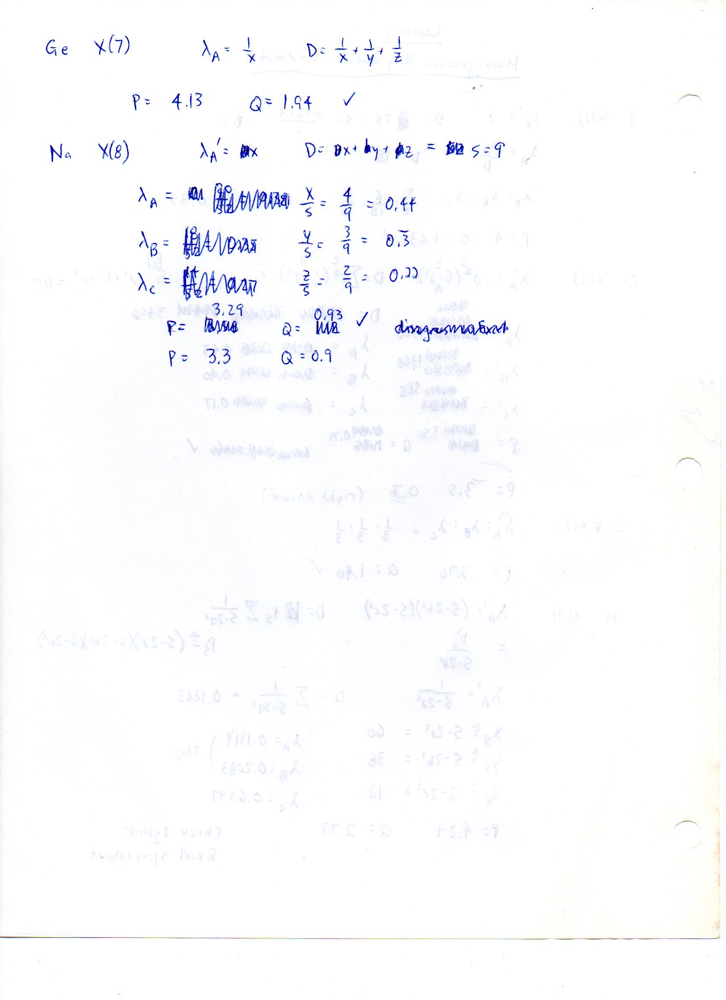
Folio 0332 (original scan 0332.jpg) from resources/seelig/52_homogeneous-barycentric-coordinates.¶
Diplomatic Mathematical & Geometric Transcription
Diplomatic Transcription — Folio 0332 (0332.jpg, Sheet 2 of 15):
Tabulates algebraic and Conway-notation barycentric weights for the incenter \(I\), centroid \(G\), circumcenter \(O\), and orthocenter \(H\).
Editorial & Symbolic Notes
Archival scan 0332.jpg from Fred W. Seelig’s notebook dossier on F.52 Homogeneous Barycentric Coordinates (Page 2 of 15). Companion OpenDocument worksheet(s): Barycentric, Barycentric (2), 9-Point Circle, 5-6-7 A,B,C. Classical Euclidean foundations: IV.4, IV.5, VI.1. Kimberling Encyclopedia of Triangle Centers loci: X(1) — Incenter, X(2) — Centroid, X(3) — Circumcenter, X(4) — Orthocenter, X(5) — Nine-Point Center, X(6) — Symmedian (Lemoine) Point, X(7) — Gergonne Point, X(8) — Nagel Point.
Folio 0333 (Page 3 of 15): Master Barycentric Catalog: X(5), X(6), X(7), X(8) (bari-centers-003)¶

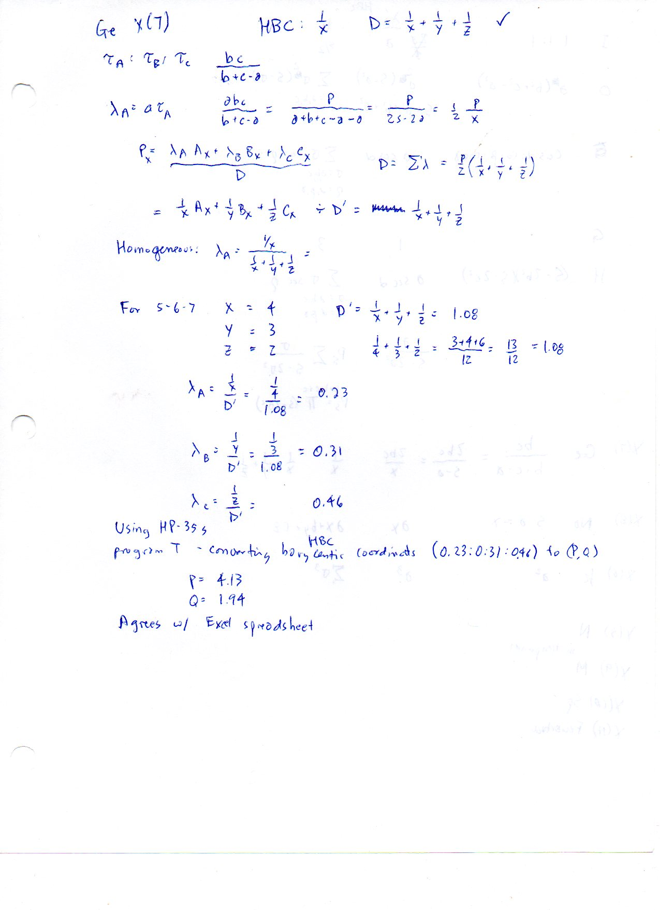
Folio 0333 (original scan 0333.jpg) from resources/seelig/52_homogeneous-barycentric-coordinates.¶
Diplomatic Mathematical & Geometric Transcription
Diplomatic Transcription — Folio 0333 (0333.jpg, Sheet 3 of 15):
Tabulates barycentric weights for the nine-point center \(N\), symmedian point \(K\), Gergonne point \(G_e\), and Nagel point \(N_a\).
Editorial & Symbolic Notes
Archival scan 0333.jpg from Fred W. Seelig’s notebook dossier on F.52 Homogeneous Barycentric Coordinates (Page 3 of 15). Companion OpenDocument worksheet(s): Barycentric, Barycentric (2), 9-Point Circle, 5-6-7 A,B,C. Classical Euclidean foundations: IV.4, IV.5, VI.1. Kimberling Encyclopedia of Triangle Centers loci: X(1) — Incenter, X(2) — Centroid, X(3) — Circumcenter, X(4) — Orthocenter, X(5) — Nine-Point Center, X(6) — Symmedian (Lemoine) Point, X(7) — Gergonne Point, X(8) — Nagel Point.
Folio 0334 (Page 4 of 15): Canonical (5, 6, 7) Barycentric Evaluation Table — Part 1 (bari-centers-004)¶

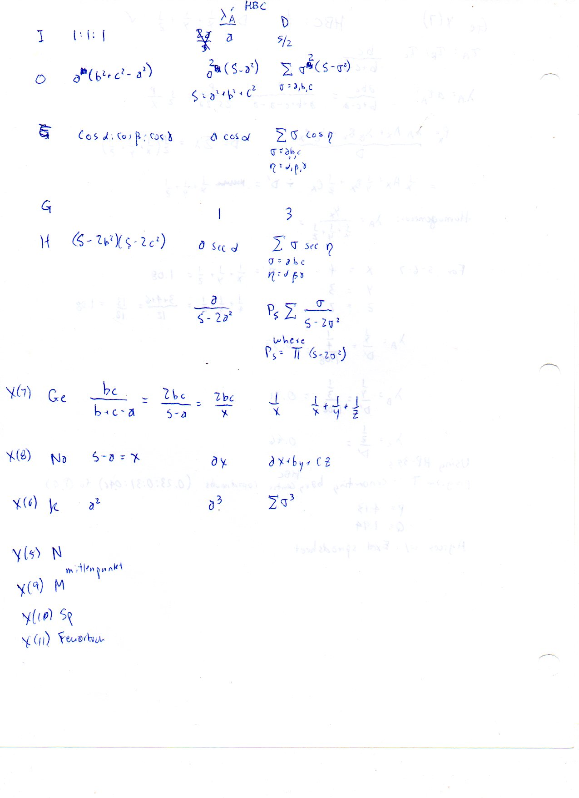
Folio 0334 (original scan 0334.jpg) from resources/seelig/52_homogeneous-barycentric-coordinates.¶
Diplomatic Mathematical & Geometric Transcription
Diplomatic Transcription — Folio 0334 (0334.jpg, Sheet 4 of 15):
Evaluates exact rational and decimal normalized barycentric coordinates of \(I, G, O, H\) on the \((5,6,7)\) triangle.
Editorial & Symbolic Notes
Archival scan 0334.jpg from Fred W. Seelig’s notebook dossier on F.52 Homogeneous Barycentric Coordinates (Page 4 of 15). Companion OpenDocument worksheet(s): Barycentric, Barycentric (2), 9-Point Circle, 5-6-7 A,B,C. Classical Euclidean foundations: IV.4, IV.5, VI.1. Kimberling Encyclopedia of Triangle Centers loci: X(1) — Incenter, X(2) — Centroid, X(3) — Circumcenter, X(4) — Orthocenter, X(5) — Nine-Point Center, X(6) — Symmedian (Lemoine) Point, X(7) — Gergonne Point, X(8) — Nagel Point.
Folio 0335 (Page 5 of 15): Canonical (5, 6, 7) Barycentric Evaluation Table — Part 2 (bari-centers-005)¶

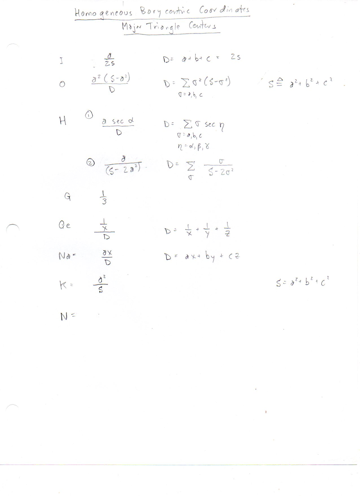
Folio 0335 (original scan 0335.jpg) from resources/seelig/52_homogeneous-barycentric-coordinates.¶
Diplomatic Mathematical & Geometric Transcription
Diplomatic Transcription — Folio 0335 (0335.jpg, Sheet 5 of 15):
Evaluates normalized barycentric and Cartesian coordinates of \(N, K, G_e, N_a\) on the \((5,6,7)\) triangle.
Editorial & Symbolic Notes
Archival scan 0335.jpg from Fred W. Seelig’s notebook dossier on F.52 Homogeneous Barycentric Coordinates (Page 5 of 15). Companion OpenDocument worksheet(s): Barycentric, Barycentric (2), 9-Point Circle, 5-6-7 A,B,C. Classical Euclidean foundations: IV.4, IV.5, VI.1. Kimberling Encyclopedia of Triangle Centers loci: X(1) — Incenter, X(2) — Centroid, X(3) — Circumcenter, X(4) — Orthocenter, X(5) — Nine-Point Center, X(6) — Symmedian (Lemoine) Point, X(7) — Gergonne Point, X(8) — Nagel Point.
Folio 0336 (Page 6 of 15): Euler Line Barycentric Combinations (bari-centers-006)¶

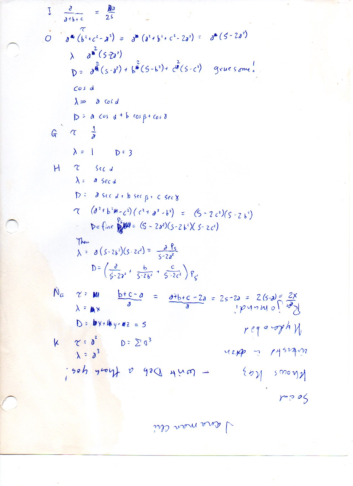
Folio 0336 (original scan 0336.jpg) from resources/seelig/52_homogeneous-barycentric-coordinates.¶
Diplomatic Mathematical & Geometric Transcription
Diplomatic Transcription — Folio 0336 (0336.jpg, Sheet 6 of 15):
Verifies \(G = \frac{2}{3}O + \frac{1}{3}H\) and \(N = \frac{1}{2}O + \frac{1}{2}H\) directly on the normalized barycentric triples.
Editorial & Symbolic Notes
Archival scan 0336.jpg from Fred W. Seelig’s notebook dossier on F.52 Homogeneous Barycentric Coordinates (Page 6 of 15). Companion OpenDocument worksheet(s): Barycentric, Barycentric (2), 9-Point Circle, 5-6-7 A,B,C. Classical Euclidean foundations: IV.4, IV.5, VI.1. Kimberling Encyclopedia of Triangle Centers loci: X(1) — Incenter, X(2) — Centroid, X(3) — Circumcenter, X(4) — Orthocenter, X(5) — Nine-Point Center, X(6) — Symmedian (Lemoine) Point, X(7) — Gergonne Point, X(8) — Nagel Point.
Folio 0337 (Page 7 of 15): Nine-Point Center N = X(5) — Form I & Form II (co001, FWS 2014/9/14)¶

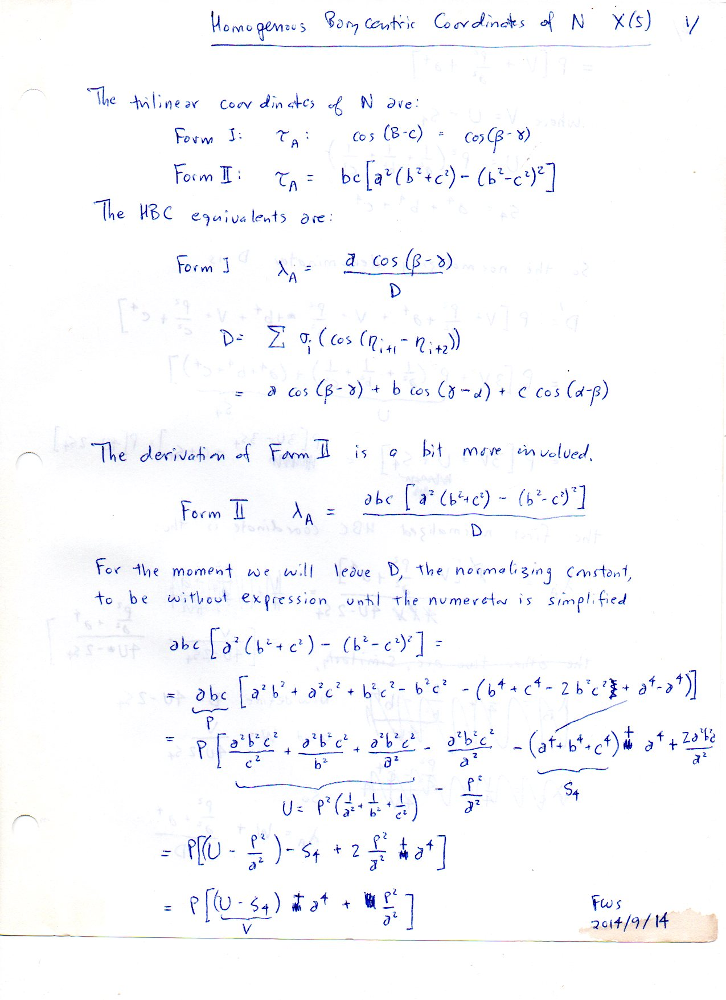
Folio 0337 (original scan 0337.jpg) from resources/seelig/52_homogeneous-barycentric-coordinates.¶
Diplomatic Mathematical & Geometric Transcription
Diplomatic Transcription — Folio 0337 (0337.jpg, Sheet 7 of 15):
States Form I (\(a\cos(\beta-\gamma)\)) and derives Form II (\(\lambda_A = W + \frac{P^2/a^2 + a^4}{D}\) with \(D = 4U - 2S_4\)) purely in terms of side lengths \(a, b, c\).
Editorial & Symbolic Notes
Archival scan 0337.jpg from Fred W. Seelig’s notebook dossier on F.52 Homogeneous Barycentric Coordinates (Page 7 of 15). Companion OpenDocument worksheet(s): Barycentric, Barycentric (2), 9-Point Circle, 5-6-7 A,B,C. Classical Euclidean foundations: IV.4, IV.5, VI.1. Kimberling Encyclopedia of Triangle Centers loci: X(1) — Incenter, X(2) — Centroid, X(3) — Circumcenter, X(4) — Orthocenter, X(5) — Nine-Point Center, X(6) — Symmedian (Lemoine) Point, X(7) — Gergonne Point, X(8) — Nagel Point.
Folio 0338 (Page 8 of 15): Algebraic Reduction of Form II (co002)¶

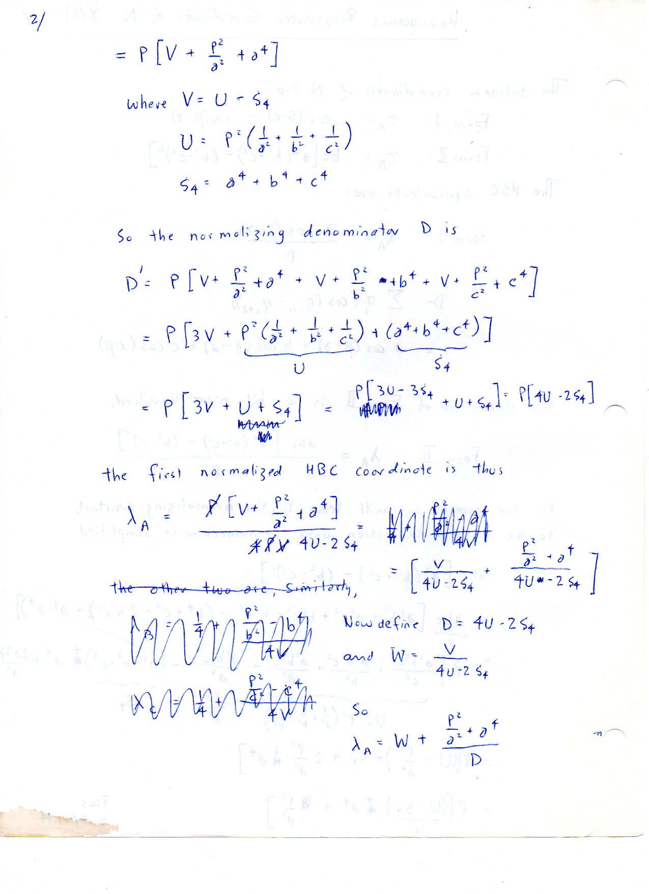
Folio 0338 (original scan 0338.jpg) from resources/seelig/52_homogeneous-barycentric-coordinates.¶
Diplomatic Mathematical & Geometric Transcription
Diplomatic Transcription — Folio 0338 (0338.jpg, Sheet 8 of 15):
Expands the symmetric polynomials \(P = abc, U = a^2b^2+b^2c^2+c^2a^2, S_4 = a^4+b^4+c^4\) and proves \(\lambda_A + \lambda_B + \lambda_C = 1\).
Editorial & Symbolic Notes
Archival scan 0338.jpg from Fred W. Seelig’s notebook dossier on F.52 Homogeneous Barycentric Coordinates (Page 8 of 15). Companion OpenDocument worksheet(s): Barycentric, Barycentric (2), 9-Point Circle, 5-6-7 A,B,C. Classical Euclidean foundations: IV.4, IV.5, VI.1. Kimberling Encyclopedia of Triangle Centers loci: X(1) — Incenter, X(2) — Centroid, X(3) — Circumcenter, X(4) — Orthocenter, X(5) — Nine-Point Center, X(6) — Symmedian (Lemoine) Point, X(7) — Gergonne Point, X(8) — Nagel Point.
Folio 0339 (Page 9 of 15): Verification of Form II on the (3, 4, 5) Right Triangle (co003)¶

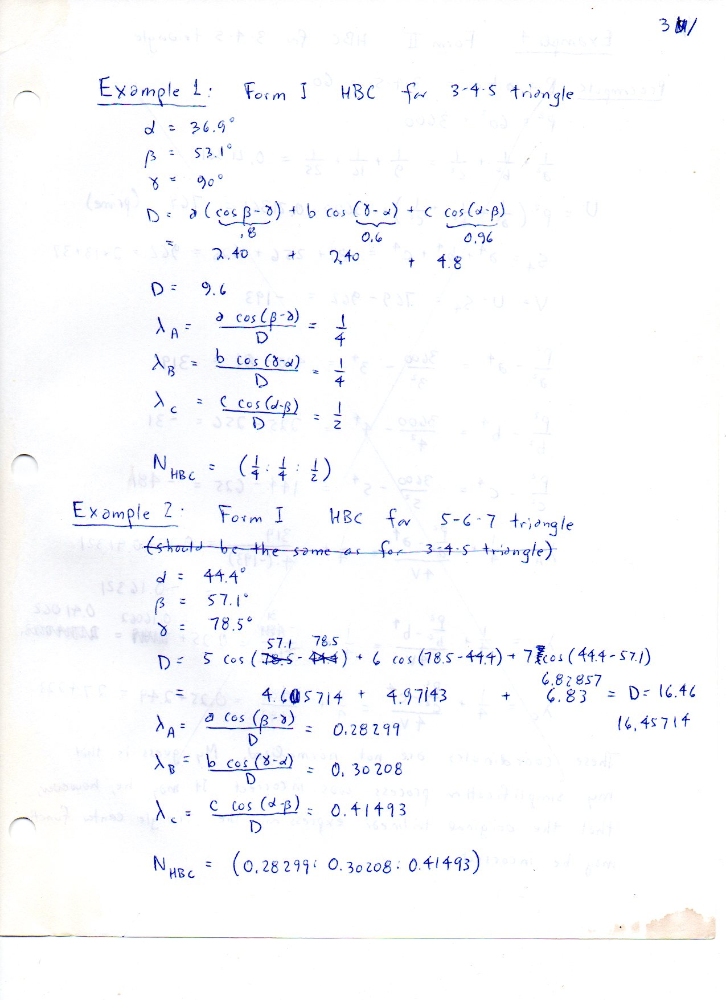
Folio 0339 (original scan 0339.jpg) from resources/seelig/52_homogeneous-barycentric-coordinates.¶
Diplomatic Mathematical & Geometric Transcription
Diplomatic Transcription — Folio 0339 (0339.jpg, Sheet 9 of 15):
Evaluates Form II at \((a,b,c) = (3,4,5)\) to obtain \((\lambda_A, \lambda_B, \lambda_C) = (1/4, 1/4, 1/2)\).
Editorial & Symbolic Notes
Archival scan 0339.jpg from Fred W. Seelig’s notebook dossier on F.52 Homogeneous Barycentric Coordinates (Page 9 of 15). Companion OpenDocument worksheet(s): Barycentric, Barycentric (2), 9-Point Circle, 5-6-7 A,B,C. Classical Euclidean foundations: IV.4, IV.5, VI.1. Kimberling Encyclopedia of Triangle Centers loci: X(1) — Incenter, X(2) — Centroid, X(3) — Circumcenter, X(4) — Orthocenter, X(5) — Nine-Point Center, X(6) — Symmedian (Lemoine) Point, X(7) — Gergonne Point, X(8) — Nagel Point.
Folio 0340 (Page 10 of 15): Verification of Form II on the (5, 6, 7) Triangle (co004)¶

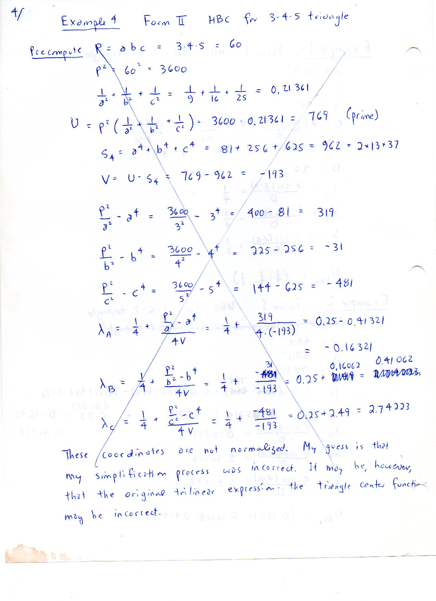
Folio 0340 (original scan 0340.jpg) from resources/seelig/52_homogeneous-barycentric-coordinates.¶
Diplomatic Mathematical & Geometric Transcription
Diplomatic Transcription — Folio 0340 (0340.jpg, Sheet 10 of 15):
Evaluates Form II at \((a,b,c) = (5,6,7)\) to obtain \((\lambda_A, \lambda_B, \lambda_C) = (163/576, 174/576, 239/576) \approx (0.28299, 0.30208, 0.41493)\).
Editorial & Symbolic Notes
Archival scan 0340.jpg from Fred W. Seelig’s notebook dossier on F.52 Homogeneous Barycentric Coordinates (Page 10 of 15). Companion OpenDocument worksheet(s): Barycentric, Barycentric (2), 9-Point Circle, 5-6-7 A,B,C. Classical Euclidean foundations: IV.4, IV.5, VI.1. Kimberling Encyclopedia of Triangle Centers loci: X(1) — Incenter, X(2) — Centroid, X(3) — Circumcenter, X(4) — Orthocenter, X(5) — Nine-Point Center, X(6) — Symmedian (Lemoine) Point, X(7) — Gergonne Point, X(8) — Nagel Point.
Folio 0341 (Page 11 of 15): Nine-Point Circle of the (7, 8, 9) Triangle — Calculations (co005)¶

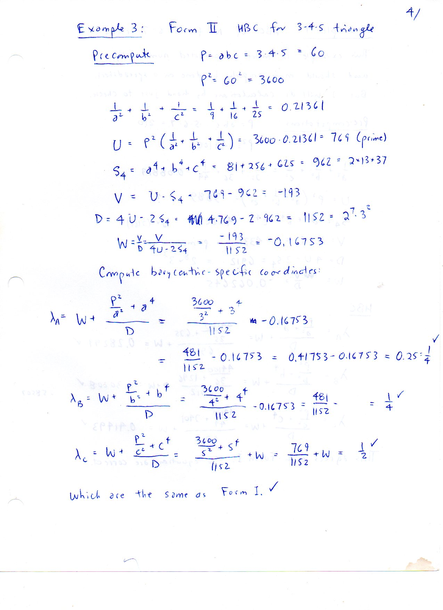
Folio 0341 (original scan 0341.jpg) from resources/seelig/52_homogeneous-barycentric-coordinates.¶
Diplomatic Mathematical & Geometric Transcription
Diplomatic Transcription — Folio 0341 (0341.jpg, Sheet 11 of 15):
Computes \(N, R = \frac{21\sqrt{5}}{10}\), and \(R_N = \frac{21\sqrt{5}}{20}\) for the \((7,8,9)\) acute triangle.
Editorial & Symbolic Notes
Archival scan 0341.jpg from Fred W. Seelig’s notebook dossier on F.52 Homogeneous Barycentric Coordinates (Page 11 of 15). Companion OpenDocument worksheet(s): Barycentric, Barycentric (2), 9-Point Circle, 5-6-7 A,B,C. Classical Euclidean foundations: IV.4, IV.5, VI.1. Kimberling Encyclopedia of Triangle Centers loci: X(1) — Incenter, X(2) — Centroid, X(3) — Circumcenter, X(4) — Orthocenter, X(5) — Nine-Point Center, X(6) — Symmedian (Lemoine) Point, X(7) — Gergonne Point, X(8) — Nagel Point.
Folio 0342 (Page 12 of 15): Nine-Point Circle of the (7, 8, 9) Triangle — Compass Drawing (co006)¶

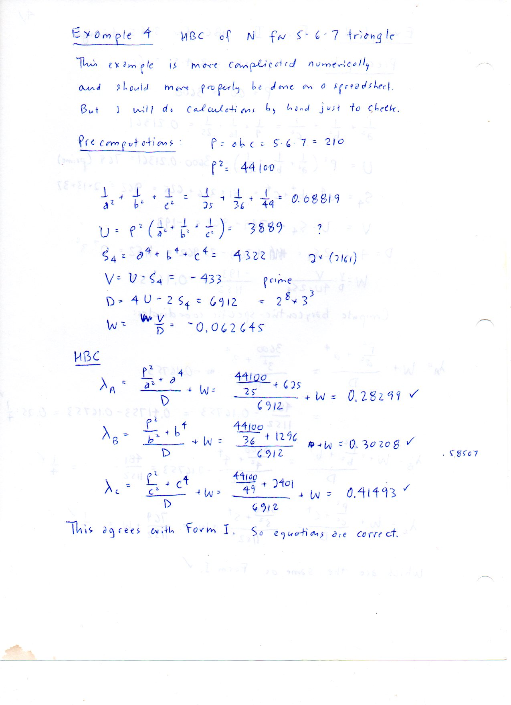
Folio 0342 (original scan 0342.jpg) from resources/seelig/52_homogeneous-barycentric-coordinates.¶
Diplomatic Mathematical & Geometric Transcription
Diplomatic Transcription — Folio 0342 (0342.jpg, Sheet 12 of 15):
Full-page geometric construction of \(\triangle ABC\) with sides \((7,8,9)\) and its nine-point circle \(\Gamma_N\) passing through all nine classical points.
Editorial & Symbolic Notes
Archival scan 0342.jpg from Fred W. Seelig’s notebook dossier on F.52 Homogeneous Barycentric Coordinates (Page 12 of 15). Companion OpenDocument worksheet(s): Barycentric, Barycentric (2), 9-Point Circle, 5-6-7 A,B,C. Classical Euclidean foundations: IV.4, IV.5, VI.1. Kimberling Encyclopedia of Triangle Centers loci: X(1) — Incenter, X(2) — Centroid, X(3) — Circumcenter, X(4) — Orthocenter, X(5) — Nine-Point Center, X(6) — Symmedian (Lemoine) Point, X(7) — Gergonne Point, X(8) — Nagel Point.
Folio 0343 (Page 13 of 15): Barycentric-to-Cartesian Matrix Transformation (co007)¶

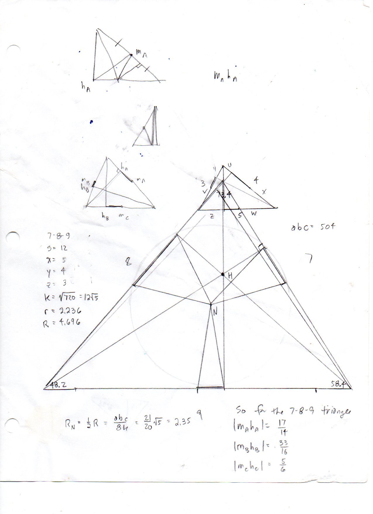
Folio 0343 (original scan 0343.jpg) from resources/seelig/52_homogeneous-barycentric-coordinates.¶
Diplomatic Mathematical & Geometric Transcription
Diplomatic Transcription — Folio 0343 (0343.jpg, Sheet 13 of 15):
Writes the \(2\times 3\) affine conversion matrix mapping \((\lambda_A, \lambda_B, \lambda_C)\) to \((x, y)\).
Editorial & Symbolic Notes
Archival scan 0343.jpg from Fred W. Seelig’s notebook dossier on F.52 Homogeneous Barycentric Coordinates (Page 13 of 15). Companion OpenDocument worksheet(s): Barycentric, Barycentric (2), 9-Point Circle, 5-6-7 A,B,C. Classical Euclidean foundations: IV.4, IV.5, VI.1. Kimberling Encyclopedia of Triangle Centers loci: X(1) — Incenter, X(2) — Centroid, X(3) — Circumcenter, X(4) — Orthocenter, X(5) — Nine-Point Center, X(6) — Symmedian (Lemoine) Point, X(7) — Gergonne Point, X(8) — Nagel Point.
Folio 0344 (Page 14 of 15): Barycentric Distance & Cevian Trace Formulas (co008)¶

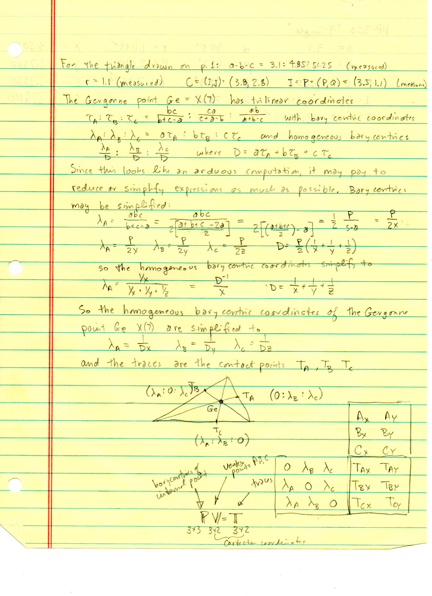
Folio 0344 (original scan 0344.jpg) from resources/seelig/52_homogeneous-barycentric-coordinates.¶
Diplomatic Mathematical & Geometric Transcription
Diplomatic Transcription — Folio 0344 (0344.jpg, Sheet 14 of 15):
Records the cevian trace ratios \(|BD|/|DC| = \lambda_C/\lambda_B\) and the barycentric distance metric.
Editorial & Symbolic Notes
Archival scan 0344.jpg from Fred W. Seelig’s notebook dossier on F.52 Homogeneous Barycentric Coordinates (Page 14 of 15). Companion OpenDocument worksheet(s): Barycentric, Barycentric (2), 9-Point Circle, 5-6-7 A,B,C. Classical Euclidean foundations: IV.4, IV.5, VI.1. Kimberling Encyclopedia of Triangle Centers loci: X(1) — Incenter, X(2) — Centroid, X(3) — Circumcenter, X(4) — Orthocenter, X(5) — Nine-Point Center, X(6) — Symmedian (Lemoine) Point, X(7) — Gergonne Point, X(8) — Nagel Point.
Folio 0345 (Page 15 of 15): HP-35s & Spreadsheet Verification Case (co009)¶

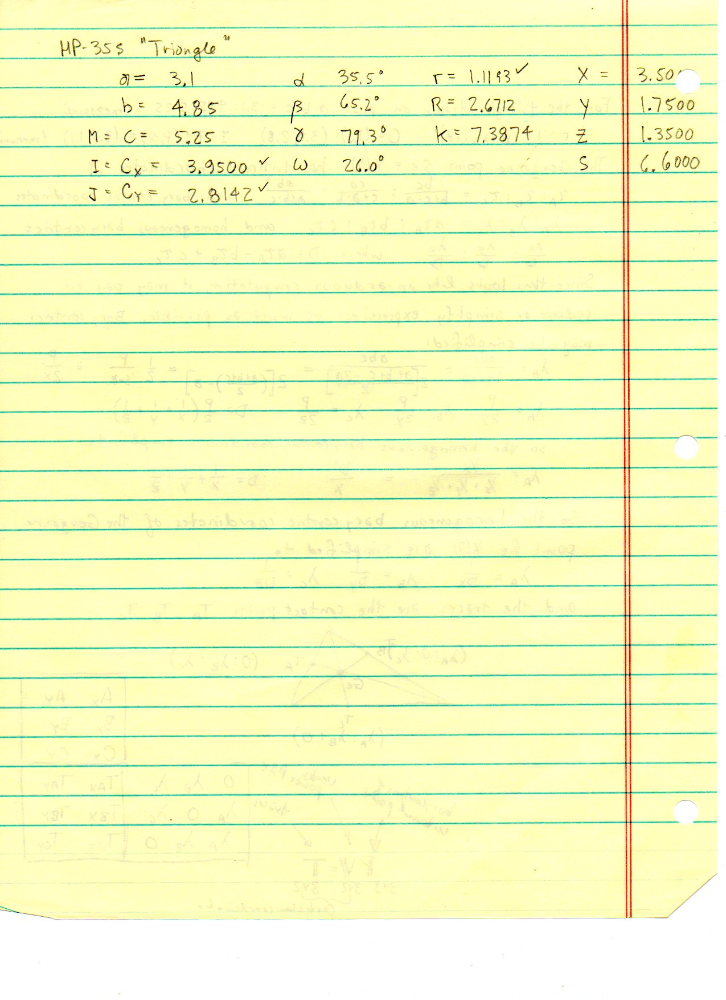
Folio 0345 (original scan 0345.jpg) from resources/seelig/52_homogeneous-barycentric-coordinates.¶
Diplomatic Mathematical & Geometric Transcription
Diplomatic Transcription — Folio 0345 (0345.jpg, Sheet 15 of 15):
Cross-checks the barycentric coordinates and Cartesian outputs against the HP-35s triangle program.
Editorial & Symbolic Notes
Archival scan 0345.jpg from Fred W. Seelig’s notebook dossier on F.52 Homogeneous Barycentric Coordinates (Page 15 of 15). Companion OpenDocument worksheet(s): Barycentric, Barycentric (2), 9-Point Circle, 5-6-7 A,B,C. Classical Euclidean foundations: IV.4, IV.5, VI.1. Kimberling Encyclopedia of Triangle Centers loci: X(1) — Incenter, X(2) — Centroid, X(3) — Circumcenter, X(4) — Orthocenter, X(5) — Nine-Point Center, X(6) — Symmedian (Lemoine) Point, X(7) — Gergonne Point, X(8) — Nagel Point.